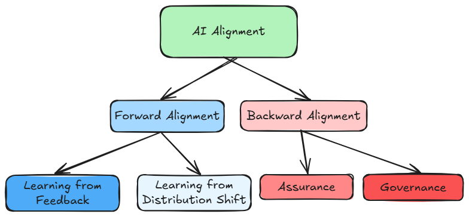
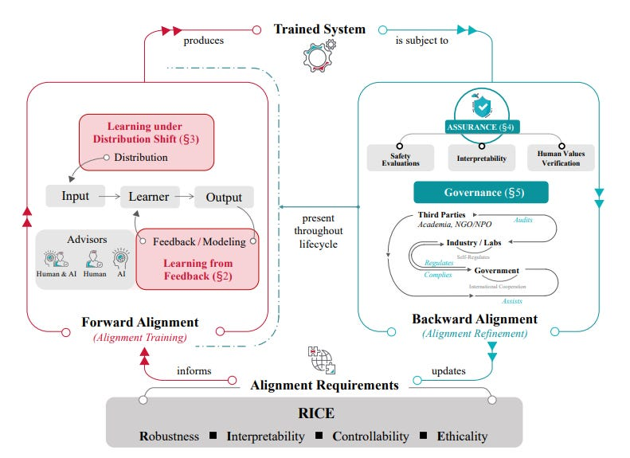
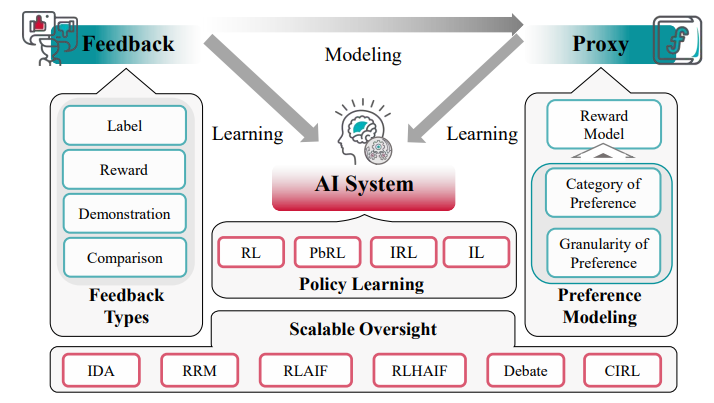

Part 1 of Navigating the Landscape of AI Alignment
Navigating the Landscape of AI Alignment, Part 1
A bird’s eye view of the field of AI Alignment, its components and techniques
AI Alignment is a critical objective of AI Safety, focused on designing safe AI systems that align with human values and intentions. In this blog post series, we’ll navigate the field of AI alignment by exploring its key objectives, core components, and the methods used to build AI systems that reliably act following human goals.
For this discussion, I’ll use the paper “AI Alignment: A Comprehensive Survey” (by researchers at Peking University, Cambridge, CMU, Hong Kong University and USC) as my main reference. This extensive 60-page paper has an exhaustive overview of the field, with over 700 citations! Of course, it’s impossible to cover everything in a blog post. So the aim is to outline the paper’s structure, helping you identify topics of interest to explore further within the relevant section of the paper. Alright, let’s start!
Following the structure of the paper, we will first discuss the main motivation for pursuing the goal of “alignment” of an AI system (the term AI is used to reference “deep-learning” and the LLM model). This is the three-step argument:
Deep learning-based systems have an increasingly large impact on society and pose significant risks
Misalignment represents a significant source of risks
Alignment research and practice address risks stemming from misaligned systems
The authors also identified 4 main objectives of AI alignment: Robustness, Interpretability, Controllability, and Ethicality (RICE). We will reference these 4 objectives when discussing the scope and techniques to build aligned systems. The definitions of these objectives are given below (verbatim from the paper):
Robustness — Operates reliably under diverse scenarios & Resilient to unforeseen disruptions.
Interpretability — Decisions and intentions are comprehensible, & Reasoning is unconcealed and truthful.
Controllability — Behaviors can be directed by humans & allow human intervention when needed.
Ethicality — Adheres to global moral standards & Respects values within human society
What are the risks of misalignment?
Given that misalignment is a major source of risk within AI systems, it makes sense to briefly discuss the risks that can occur due to an advanced AI system being “misaligned”. These risks are classified as a high-priority problem by several private and public institutions, researchers and leaders across the globe. Particularly, superhuman intelligence can lead to such safety concerns on a global scale — bias, inequalities (gender, race, ethnicity, religion, immigration status), and lack of control. Moreover, the trend of scaling LLMs and agentic AI contributes further to the lack of controllability of the underlying behavior of the model.
Several researchers attending the Centre of AI Safety’s (CAIS, UK) 2023 summit declared that “Mitigating the risk of extinction from AI should be a global priority alongside other societal scale risks such as pandemics and nuclear war”. Incidentally, the AI Safety Summit, also hosted in the UK, led to the signing of the Bletchley Declaration by 28 countries, highlighting the importance of international cooperation on AI Safety. If you would like to read in detail the understanding of the different classes of misaligned behaviors, visit the section of the original paper titled “Misaligned behaviors and outcomes” for a detailed overview.
Causes of misalignment
There are two main modes of failure, responsible for the misalignment of an AI system, namely reward hacking and goal misgeneralization. Let’s discuss these two failure modes in greater detail. Keep in mind that we will talk about these modes using the typical reinforcement learning setup since it is quite straightforward to understand:
1. Reward hacking
Designing rewards for an RL agent that works in a stochastic and partially observable environment is a complex task. Because of this, we rely on “proxy” rewards, an approximation of the true reward, that are easier to optimize and measure. But, as expected they frequently fail to capture the essence of the actual rewards. This type of failure is known as a reward misspecification. Optimizing the behavior of an agent based on such misspecified rewards leads to reward hacking. This means the agent is quite proficient at maximizing the proxy reward but fails when compared to human standards, i.e. the true reward.
2. Reward tampering
Reward tampering is a special case of reward hacking where the AI system itself corrupts the process of reward signal generation. The following are the problems encountered by an RL agent in this scenario:
Tampering of reward function — agent interferes with a reward function
Tampering of reward function input — corruption within the process responsible for translating environmental states into inputs for the reward function
3. Goal misgeneralization
Agent actively pursues objectives different from the ones it was trained to follow while retaining its capabilities in the training environment. In other words, it maximizes the original reward by maximizing an internal goal that it developed during training, but this doesn’t work well during deployment.
The reward hacking failure mode usually falls into the realm of outer alignment. On the other hand, goal misgeneration falls into the realm of inner alignment. Check out my previous blog post if you want an introduction to the concepts of inner and outer alignment with examples and a detailed discussion on how to differentiate between misalignment failures as inner/outer alignment.
4. Feedback Induced Misalignment
The systems in the post-LLM and FM (foundation models) era, add to the complexity presented in the misalignment scenarios presented outlined above. These systems are general-purpose, open-ended, and trained using a mix of supervised and self-supervised techniques, often incorporating human feedback. Hence, feedback can also contribute to misaligned behavior.
Human feedback can be a powerful tool for alignment. However, it has limitations, as inconsistencies often arise from human data annotators. Biases stemming from factors like cultural differences, conditioning, and age can further complicate the process, especially for more complex tasks. Since LLMs are trained to capture human intent using reward-based mechanisms (eg, RLHF), which rely on comparison feedback, it can also be challenging to capture human values. They may learn suboptimal objectives, and a single reward model is too simple to encompass the complexity of human preferences.
AI Alignment Framework
The authors present two main components that make up the framework of AI alignment: forward alignment, also referred to as alignment training and backward alignment, referred to as alignment refinement.

Forward alignment
Forward alignment aims to produce trained AI systems that follow alignment requirements. The techniques for forward alignment can be further categorized into:
Learning from feedback: provide and use feedback effectively to train an aligned AI system
Learning under distribution shift: focuses on aligning AI systems in cases where the data distribution is dynamic
Backward alignment
Backward alignment aims to ensure the alignment of the trained system (that is produced using one of the forward alignment techniques). Backward alignment techniques can also be categorized into two steps:
Assurance: performing evaluations and setting up guardrails to handle real-world complexities
Governance: creation and enforcement of rules that promote the safe development and deployment of AI systems
The alignment cycle that comprises the forward and backward alignment steps proceeds in the following manner: an aligned AI is produced following a set of requirements using a forward alignment technique, and these alignment requirements are updated based on the results of the evaluation (based on the backward alignment techniques) of these systems before and after the system is deployed. This will serve as the next turn of alignment training.

Within the techniques of forward alignment, there are two main categories in the paper: 1) Learning from Feedback and 2) Learning from Distributional Shift. In part 1 of this blog post series, we will cover the first category for forward alignment techniques, i.e. Learning from Feedback.
Learning from Feedback
Learning from feedback is the paradigm of techniques used to train AI systems to be aligned using feedback generated by humans, other AI systems, or both. The central challenge lies in developing effective methods to deliver and utilize feedback to adjust the behavior of trained AI systems, using input-behaviour pairs as data points. The process of learning from feedback is as follows:
The feedback is first collected and prepped to be sent to the model — this will be encapsulated in the sections of feedback and preference modelling. Preference modelling will study the aspect of sending feedback directly to the model or using a proxy.
Then the model should be trained using an algorithm that can learn from the feedback provided, which will be policy learning
Traditional policy learning has several challenges that make it difficult to implement for complex tasks and scalability — techniques to overcome this are discussed in scalable oversight.
Learning from feedback also refers to the concept of “outer alignment”, and can be seen as a method to mitigate the problems of outer misalignment.
Within the process of learning from feedback, there are 3 primary entities:
AI System: primary learning entity, an algorithmic target
Feedback: information from an advisor set for system adjustments
Proxy: representative models for feedback that’s complex to learn directly

What is feedback?
Feedback in the context of AI alignment is information given to the AI system to align it with human intent. Various types of feedback can be given to an AI system, depending on the type of improvement/output desired. This includes:
Label feedback: The Oldest form of feedback, originating in supervised learning. Meaningful tags are attached to a sample (i.e., class, category, and value). This feedback prompts a system to learn directly from the input-output pairing.
Reward feedback: Absolute evaluation of a single output from an AI system (typical RL system)
Demonstration: Behavioral data collected from experts performing a certain task. This can include videos, sensor data, wearable sensor data, etc.
Comparison: Relative evaluation that ranks a set of outputs from an AI system and guides towards more informed decisions
Discussion: Interactively providing feedback
Techniques to Learn from Feedback
Preference modelling
Formulating rule-based rewards for tasks like dialogue is highly challenging. Additionally, collecting demonstrations for such tasks can be time-consuming and require massive data for diversity and high-quality output. For this reason, preference modelling based on comparison feedback (i.e., ranking several responses from human experts from good to bad) is a promising method. This preference can be provided at different levels of granularity (i.e. State-Actions, Trajectories). There also exist several categories of preferences
Absolute preferences: Independently articulate the degree of performance. They can be of two types, binary - liked/disliked and gradual - numeric/ordinal preferences.
Relative: Define a preference relation between items. They are either a total order - absolute order, covering relation between all pairs of items, or a partial order - not exhibiting a distinct preference between two items in some instances
There are two pathways of learning from preference feedback presented to the model:
Direct feedback learning: This implies that the feedback is used directly as a signal to train the model.
Learning from a feedback proxy: Instead of the feedback, an alternate “model” known as the “reward model” is trained to provide reward/feedback. Reward modelling is responsible for transforming comparison feedback (eg, pairwise feedback) into a scalar reward form to enable policy learning. Examples of methods for reward modelling include the Bradley-Terry model and the Palckett-Luce model. Methods such as the RLHF are a prominent example of learning from a feedback proxy. Users can impart specific preferences to systems via evaluations without explicitly defining objectives.
Policy learning
Policy learning aims to map from specific states to specific agents, i.e. it defines the behavior of the agent. This is one of the main objectives of reinforcement learning (RL). RL can be defined as a technique that allows an agent to learn an optimal policy via interacting with the environment by trial and error. Within the LLM era, PPO has been one of the most popular RL algorithms used within the RLHF technique, which will be covered shortly. Below, I have listed some of the most popular RL methodologies that have been used.
Preference-Based RL (PbRL): Aims to facilitate learning using preference feedback (such as preferred trajectories) instead of explicit reward signals. This approach is beneficial when defining a precise reward function is challenging, or human values are nuanced and need to be encoded through iterative feedback. For a detailed overview of PbRL, check out this article.
Imitation RL: This form of RL is also referred to as behavioral cloning, where the focus is on emulating human behaviors within specific tasks. The agent uses the demonstration provided to learn a mapping between observations and actions and refines its policy. Assuming the demonstration to be the gold standard, the agent gets rewarded for mimicking the expert as closely as possible.
Inverse RL: Focuses on learning the underlying reward function that drives the observed behavior rather than directly learning a policy. It is particularly useful in scenarios where explicitly specifying the reward function is difficult. eg: behavior modelling, robotics.
RLHF (Reinforcement Learning with Human Feedback)
RLHF expands upon the concept of Preference-based RL (PbRL) into the field of deep reinforcement learning. It gained popularity as the algorithm behind the alignment of the GPT 3.5 instruct (ChatGPT) model. In a nutshell, the steps involved in RLHF are as follows:
Pre-training/Supervised Fine-tuning
Collecting preference data and training a reward model
Policy optimization of the model using reward from the model as feedback (The PPO algorithm is used to train the agent in case of RLHF)
For a detailed overview of RLHF, you can refer to this blog post and paper. Although this method is quite effective, it is very complex to implement, has a huge computational overhead and is not very sample-efficient. In contrast, more recent methods, such as DPO, eliminate the need for training the reward model and focus on integrating the feedback directly into the training cycle.
From the view of AI Safety, there are some open questions regarding the effectiveness of RLHF in ensuring AI safety
How can we balance harmlessness and helpfulness in alignment (especially in preference-driving feedback methods)?
How can we maintain impeccable safety alignment even after further fine-tuning of models?
Scalable oversight
Given what we know about RLHF, it is complex and requires a lot of resources to implement. As AI systems become more complex, making mistakes during training becomes quite easy (eg: insufficiently capturing training signals, erroneous loss functions), leading to a wide array of unexpected behaviors that become hard to monitor and control. To fix this, we must address the issue of providing scalable techniques that allow systems to monitor aligned behavior by providing feedback at scale. This led to the advent of a set of techniques called “scalable oversight”. Scalable oversight aims to monitor AIs that can have superhuman capabilities successfully. Below we discuss each of the techniques in detail:
1. RLxF: A set of techniques that are focused on making RLHF more scalable. The x in the term refers to a blend of AI and humans.
RLAIF (Reinforcement Learning with AI feedback): Uses feedback from LLMs instead of human feedback. Model self-evaluates and revises its prompts based on red teaming.
RLHAIF (Reinforcement Learning with Human and AI Feedback Human and AI feedback): Integrates human and AI elements to provide oversight. Here, humans and AI handle specific sub-tasks within a task to simplify the process of evaluation.
2. Iterated distillation and amplification: Constructing scalable oversight through iterative collaboration between humans and AIs.
Step 1: Initial agent A[0] mirrors the decision-making of a human H
Step 2: If A[0] undergoes training using a potent technique that equips it with near-human-level proficiency (distillation)
Step 3: Collaborative interaction between H and multiple instances of A[0] leads to the creation of enhanced agent A[1].
One of the principal assumptions of IDA is that “Errors won’t continuously accumulate throughout the iterations”, which also presents one of the main challenges with IDA, i.e. dealing with cascading errors.
3. Recursive Reward Modeling: As we discussed earlier in reward modelling, the core idea is to use human feedback to train a reward model, which an agent can then optimize. This approach enables the separation of designing the system’s objective from evaluating its behavior, while also providing insights into the optimization direction of the AI system. Recursive Reward Modelling (RRM) aims to extend the concept of reward modelling to more challenging tasks. It achieves this with the recursive use of already trained agents to provide feedback by performing reward learning on an already amplified version of itself for training successive agents on more complex tasks. It combines the iterative method in IDA, replacing the supervised learning in each iteration with reward learning.
One of the principal assumptions of RRM is that “evaluating outcomes is easier than producing behavior”.
4. Debate: Debate is an adversarial alignment technique, where two agents present answers and judgements to assist human judges in their decision-making process. The nature of the debate is zero-sum i.e. agents identify each other’s shortcomings while trying to maximize trust from the human judges. The principal assumption for debate is “Arguing for truth is generally easier than a falsehood”. Within debate:
Step 1: Two agents are initialized along with a set of questions Q.
Step 2: A question is selected (QS) from Q, to which the agents provide answers A0 and A1.
Step 3: The arguments provided by each agent are saved in a list T (transcript).
Step 4: A Judge is provided with (QS, A0, A1, T) and ultimately decides the winning agent.
5. Cooperative inverse RL (CIRL): Unlike the previous methods, CIRL does not consider learning from feedback and control as separate phases. Within the framework of CIRL, the learning and feedback-providing (humans) agents coexist in the same environment. They engage in cooperative interactions, incentivizing the agent to incorporate the feedback provided and not engage in reward-hacking behavior. Following is the methodology:
The task is modelled as a two-player cooperative game, where the human player H and the robot player R share a common reward function r(·).
The reward function and reward signals aren’t visible to R and are only inferred by R from behaviours of H via an IRL-like process (including by asking and interacting with H).
Weak to strong generalization
As we saw above, scalable oversight is useful in providing supervision signals to AI systems by using powerful, smarter models. However, this poses a problem when evaluating the task is possibly as hard as performing the task itself. In that case, providing supervision to a superhuman AI is quite difficult.
In this case, a phenomenon called the weak-to-strong generalization technique is proposed. The core idea is to use weak supervision signals from a weak model to train a strong model. The weak model is trained on ground truth and then annotates new data with weak labels for training the strong model. The insight behind weak to strong is that the strong model can generalize beyond weak labels instead of imitating the weak models. The challenge is that it's difficult to verify when humans don’t know the ground truth.
And that’s it! In the next part of this series, we will discuss the Learning from Distribution shift technique in detail. Stay tuned!
Originally published on Mind & AI on Substack.